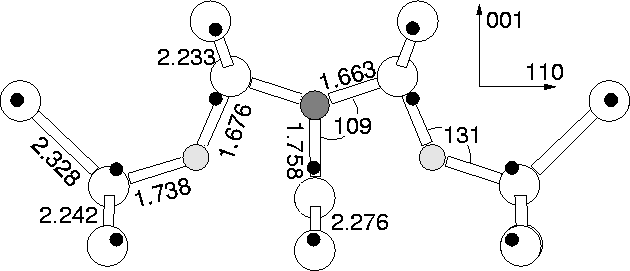
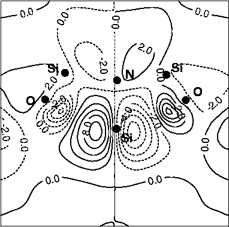

There are two likely structures for the NiO2i defect which have C2v and C1h symmetries respectively. These correspond to placing one oxygen atom either side of Ni, or both on the same side, respectively. Unlike the case of CiO2i, we found the first defect to have the lower energy by 1.52 eV, and hence the NiO2i has the same symmetry as that found for nitrogen related STDs [190]. Crucially the defect has a very shallow donor level, which is more properly described by effective mass theory, as shown in Figure 8.2. The calculated local vibrational modes of Ni-O2i are given in Table 8.1.
|  |
The 150 atom cluster, Si79H68NO2, was used for
investigating this defect, centred on the N-Si bond centre lying on
the C2 axis; this ensured that all atoms up to second shell
neighbours of the defect atoms were bulk Si atoms. Its relaxed
C2v defect structure is shown in Figure 8.1. The
oxygen atoms have an Si-O-Si bond angle of 140 , considerably
lower than the standard interstitial angle of , and
closer to that of substitutional oxygen (). In
addition the Si-O bond lengths are 1.69 Å and 1.64 Å for the
outer and bonds respectively, again lying somewhere between normal
interstitial and substitutional bond lengths (1.61 Å and 1.75 Å
respectively [99]). The distance between the O atoms and the
central Si atom is 2.54 Å: considerably longer than would be
expected if there was a Si-O bond forming.
, considerably
lower than the standard interstitial angle of , and
closer to that of substitutional oxygen (). In
addition the Si-O bond lengths are 1.69 Å and 1.64 Å for the
outer and bonds respectively, again lying somewhere between normal
interstitial and substitutional bond lengths (1.61 Å and 1.75 Å
respectively [99]). The distance between the O atoms and the
central Si atom is 2.54 Å: considerably longer than would be
expected if there was a Si-O bond forming.
The N atom has two short 1.65 Å top Si-N bonds and a longer 1.72 Å [100] Si-N bond, so the presence of the Oi causes a 9.5% compression of the top bonds, slightly compensated by a 4.1% extension of the lower N-Si bond.
We also optimised the defect structure in the positive charge state, since at the annealing temperatures described the shallow level will depopulate. This revealed a very similar structure, where the O atoms move only 0.15 Å towards the central Si. Thus there is a slightly stronger third Si-O bond, although not three equivalent bonds as are shown in related `y-lid' models [121,92]. This small change suggests that cluster size is not playing a significant role.
|  |
A plot of the wavefunction of the partially filled shallow level is given in Figure 8.3. The level is diffusively localised on the p- type dangling bond of the central Si radical. There is negligible localisation on the interstitial nitrogen, consistent with the lack of any hyperfine interaction with N observed by EPR/ENDOR experiments. The nodal surface between O and the Si radical demonstrates an anti-bonding character to the state. There must then be a bonding orbital lying below this state and this shows that the O atoms are to some extent overcoordinated. A larger cluster would probably lead to a greater delocalisation of the donor state, which would then be properly described by effective mass theory.
| 14N16O16O | 14N18O16O | 14N18O18O | 15N16O16O |
| 1051.4 | 0.4 | 0.8 | 28.6 |
| 893.6 | 10.3 | 36.4 | 1.5 |
| 857.9 | 28.3 | 40.9 | 0.8 |
| 720.3 | 1.1 | 2.2 | 12.3 |
| 673.4 | 2.0 | 3.8 | 12.1 |
The local vibrational modes for the defect are given in Table 8.1. As would be expected, the longer Si-O bonds lead to oxygen related LVMs that are lower than those of the standard interstitial, and closer to those of substitutional Os. Interestingly the oxygen modes are strongly coupled due to their shared interaction with the core Si, yet are largely decoupled from the Ni. Although the STDs are typically present in concentrations too low to be observed by infra-red spectroscopy, there should be enough of them for detection by photoluminescence methods.
Further calculations show that the defect with two more interstitial
oxygen atoms in the  110
110 plane is stable,
Ni-O4i. These atoms sit in standard interstitial sites but
are able to relieve some of their compressive strain through a
compression of the weaker central Si-O-Si bonds. These O atoms move
closer to the Si radical. This should result in pushing upwards the
shallow donor level but the limitations of the cluster method prevent
a quantitative estimate of the change.
plane is stable,
Ni-O4i. These atoms sit in standard interstitial sites but
are able to relieve some of their compressive strain through a
compression of the weaker central Si-O-Si bonds. These O atoms move
closer to the Si radical. This should result in pushing upwards the
shallow donor level but the limitations of the cluster method prevent
a quantitative estimate of the change.
This mechanism whereby larger oxygen aggregates push the nearest oxygen atoms towards the Si radical, increasing the repulsive central cell potential, demonstrates how the family of shallow donor states develops. It also explains the observation of Suezawa et. al. that the absorption lines of different shallow donor defects at first sight appear to be single absorption line splitting due to small strains at the defect core [165]. A more detailed discussion is given in Section 8.10.
Since performing these calculations we have learned that independant research by Chadi also shows Ni-O2i to possess a shallow donor level in this configuration [211].